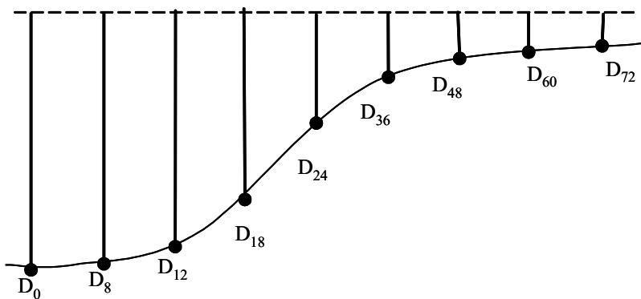
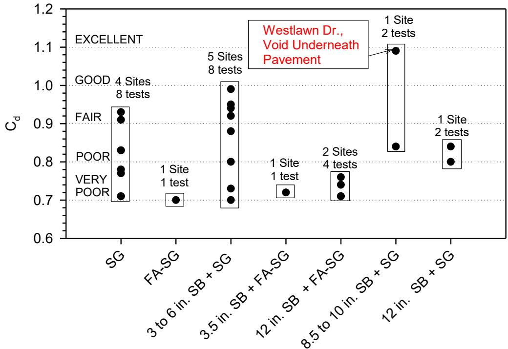
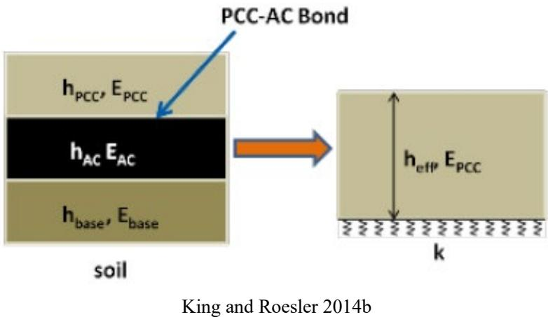
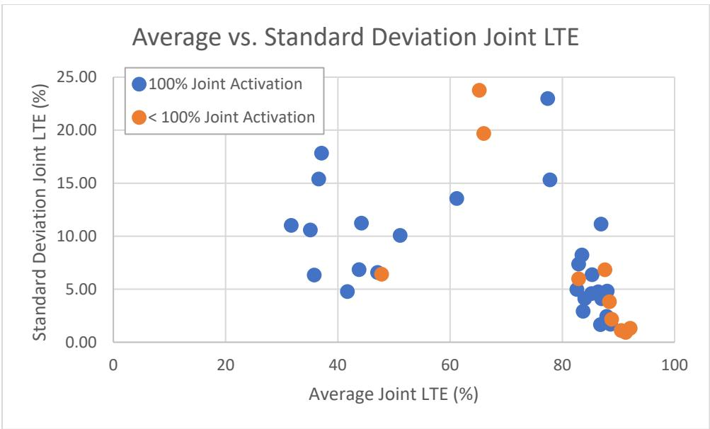

Deflection Testing
Deflection testing is a nondestructive evaluation method that assesses pavement structural performance by applying loads to the surface and measuring resulting vertical displacements. The collected data forms a deflection basin that reflects the pavement’s load-response characteristics, which are then analyzed through backcalculation techniques to estimate layer stiffness properties like elastic moduli [1] [2]. This approach allows for rapid, non-invasive assessment of pavement infrastructure without the need for destructive coring or excavation [2].
CP Tech Center reports covering “Deflection Testing” also include the following subtopics: Continuous Deflection Testing and Falling Weight Deflectometer.
Deflection Testing evaluates pavement structural integrity by measuring surface deformation under load. Continuous Deflection Testing fulfills this mandate through moving-load strategies that capture dynamic responses at highway speeds. Falling Weight Deflectometer applies controlled impulse loads to measure the resulting dynamic deformation basin for similar assessment.
Sources (9)
Sub-concepts (2)
Key findings
- Deflection testing established itself as the primary nondestructive technique for evaluating pavement structural condition, offering a faster and less disruptive alternative to destructive methods by utilizing dynamic impulse loads that simulate moving traffic [2].
- The quality of deflection data proved to be the critical determinant for accurate backcalculation, with results being highly sensitive to input assumptions such as layer thickness and bonding degree [2].
- Artificial Neural Network models demonstrated a significant efficiency advantage by directly predicting critical pavement responses from deflection basins, eliminating the intermediate step of estimating layer moduli and providing processing speeds approximately two million times faster than finite element models [2].
- Deflection testing served as a critical input for determining overlay depth and validating analytical models, with field measurements showing good agreement with finite element analysis predictions [3].
- The structural behavior of composite pavements was significantly influenced by interface conditions, with unbonded layers exhibiting substantially higher deflections than fully bonded configurations [3].
- Deflection testing technologies for rigid pavements faced significant challenges in achieving the high accuracy and precision required for systemwide inventory management, particularly when operating at highway speeds where ambient noise and vehicle vibration degraded signal quality [1].
- Falling Weight Deflectometer testing served as a primary tool for characterizing existing pavement structural capacity and validating overlay design procedures by comparing pre- and post-construction data [4].
- Analyzing deflection reductions confirmed that properly designed overlays effectively eliminated nearly all measured deflection, verifying the pavement’s transition to a rigid composite structure [4].
Structural Assessment and Load Transfer Mechanics
Evidence: 7 reports (6 primary)
Structural assessment through deflection testing relies on applying dynamic surface loads and measuring the resulting vertical displacements to characterize how pavement layers respond to stress [1] [2]. The spatial distribution of these displacements forms a deflection basin that reflects the composite stiffness of the system, enabling engineers to backcalculate layer moduli and identify critical structural weaknesses [2] [5]. In jointed concrete pavements, load transfer mechanics govern how wheel loads are distributed across adjacent slabs via embedded dowel bars, a process that mitigates localized stress concentrations and prevents distresses like faulting [6]. The efficiency of this load transfer is directly linked to joint stiffness and the integrity of the support surrounding the dowels, with void formation or corrosion significantly degrading the pavement’s ability to share loads effectively [6].
Research problem — Traditional backcalculation methods for determining pavement layer moduli are computationally inefficient and rely on linear elastic assumptions that misrepresent nonlinear geomaterial behavior, creating a need for faster analytical tools to support real-time network assessment [2]. Current standards and theoretical models lack the capability to accurately evaluate modern dowel technologies with non-circular geometries or alternative materials, preventing reliable comparison of load transfer efficiency across different design configurations [6]. There is a fundamental trade-off between the high accuracy required for structural assessment and the operational efficiency needed for network-level evaluation, as traditional stationary methods are too slow and continuous profiling techniques often fail to capture peak deflections due to asymmetric slab behavior [1] [7].
State of the art — The field has transitioned from empirical and linear elastic layer analysis toward mechanistic-empirical procedures that utilize Falling Weight Deflectometer data to backcalculate layer moduli and subgrade support for integration into complex design algorithms [3] [2]. Current structural assessment relies on characterizing interface conditions, such as partial bonding in composite pavements, and accounting for environmental factors like temperature gradients to accurately predict stresses and fatigue distresses [3] [5]. While traditional iterative backcalculation methods are being supplemented by artificial neural networks for rapid property prediction, significant challenges remain in standardizing load transfer efficiency metrics and validating models against the variability of subgrade support and joint behavior [6] [2] [5].
The figure below illustrates the application of these artificial neural networks in ILLI-PAVE-based backcalculation models for flexible pavements.
 Classification of ILLI-PAVE-based ANN backcalculation models for flexible pavements. [2]
Classification of ILLI-PAVE-based ANN backcalculation models for flexible pavements. [2]
This classification illustrates how specific model configurations based on deflection measurements are applied to different flexible pavement systems.
Findings from the reports
- Testing frequencies ranging from 0.1 to 1.0 miles yielded consistent results, suggesting that a minimum of 1.0 mile test frequency is sufficient for relatively uniform pavement surfaces without compromising design accuracy [4] [5].
- The deflection related to the 9 kip load was well suited for pavement overlay design purposes among the recommended loads of 6, 9, and 12 kips [4] [5].
- Properly designed overlays effectively eliminated nearly all measured pre-construction deflection, verifying the structural adequacy of the resulting rigid composite system [4] [5].
- Deflection testing served as the primary mechanism for evaluating joint effectiveness and load transfer efficiency in rigid pavements, with specific metrics such as Joint Effectiveness requiring values of 75 percent or higher to be considered adequate for medium to heavy truck loads [6].
- Measured field deflections aligned well with analytical predictions to validate finite element models used in mechanistic whitetopping design procedures, confirming the reliability of adjusted deflection values for determining effective moduli [3].
- Unbonded interface conditions increased maximum deflections by approximately 61%–66% compared to bonded configurations, demonstrating that maintaining bonded conditions between layers is essential for keeping deflections and stresses low [3].
- Predicted layer moduli were highly sensitive to input variables, particularly assumed pavement thickness, where minor errors in Portland cement concrete slab thickness caused considerable differences in predicted elastic modulus [2].
- Training models with controlled noise levels ranging from ±2–3% enhanced robustness against field measurement inaccuracies compared to using clean synthetic data alone [2].
- Composite stiffness values obtained via deflection methods were substantially lower than those estimated by Dynamic Cone Penetrometer results because deflection measurements inherently captured loss of support conditions that other methods missed [5].
- Joint load transfer efficiency was consistently high in newer pavements but dropped significantly in older sections, indicating poor joint performance despite varying structural support levels [5].
- High-speed digital cameras and air-coupled surface wave sensing demonstrated theoretical potential for continuous deflection testing but required further development to address challenges such as vehicle-induced vibration and acoustic interference before reliable replacement of traditional systems [1].
Novelty & rigor — Recent research has introduced mechanistic frameworks that quantify how interface bond conditions and load transfer mechanisms critically influence composite pavement deflection, refuting previous assumptions about arch effects and establishing the necessity of positive load transfer for maintaining structural integrity [3]. To address computational inefficiencies in traditional backcalculation, novel Artificial Neural Network models have been developed to directly predict pavement layer properties from deflection basins, eliminating the need for iterative seed modulus selection and enabling real-time analysis of large datasets [2]. New methodologies integrate Falling Weight Deflectometer data with Dynamic Cone Penetrometer results to quantify loss of support by comparing composite modulus values, providing a more accurate assessment of in-situ voids and foundation performance than static design assumptions [5]. High-speed continuous evaluation techniques utilizing time-coincident measurements and air-coupled surface wave sensing have been proposed to overcome the limitations of static testing, allowing for non-contact stiffness estimation at highway speeds without physical contact sensors [1].
The following figure illustrates the sensor spacings and schematic view of the deflection basin used in Falling Weight Deflectometer testing.

FWD Sensor Spacings and Schematic View of the FWD Deflection Basin [1]The figure displays a schematic representation of a deflection basin, showing vertical displacement measurements taken at various distances from a central load application point. Multiple sensors are positioned along the pavement surface to capture the resulting deformation profile, which is essential for backcalculation techniques used to determine layer stiffness properties like elastic moduli.
Reported values
| Parameter | Value | Context | Source |
|---|---|---|---|
| signal-to-noise ratio | 1.0 | passing semitrailer | [1] |
| joint effectiveness | 75 percent | medium to heavy truck loadings | [6] |
| load transfer efficiency (LTE) | 70 and 100 percent | sufficient load transfer | [6] |
| deflection increase | 10% | thinner whitetopping overlays compared to 4.5″ overlays | [3] |
| deflection increase | 61%–66% | unbonded layers compared to bonded | [3] |
| foundation stiffness | 85 pci | composite pavement on Iowa Highway 13 | [3] |
| maximum deflection increase (unbonded) | 61%–66% | when the layers were unbonded | [3] |
| deflection load for design | 9 kip | pavement overlay design purposes | [4] |
| FWD load | 6, 9, and 12 kips | each test site | [4] |
| FWD load | 9 kip | well suited for pavement overlay design purposes | [4] |
| minimum testing frequency | 1.0 mile | overlay design surfaces if the pavement is relatively uniform | [4] |
| testing frequency | 0.1 to 1.0 miles | Iowa Highway 9, US 65, and County Road V-18 projects | [4] |
| overall absolute average error (AAE) | less than 1.5 percent% | ANN-based models predicting pavement layer moduli values of EAC, EPCC, and ks | [2] |
| recommended noise level | at least 2%–3% | noise in the deflection basins | [2] |
Across the reviewed reports, deflection testing serves as the primary nondestructive mechanism for evaluating structural adequacy and load transfer efficiency in rigid pavements, with specific metrics such as Joint Effectiveness requiring values of 75 percent or higher to be considered adequate for medium to heavy truck loads. The structural behavior of composite and whitetopped pavements is critically dependent on interface bonding conditions, as unbonded layers exhibit substantially higher deflections—increasing by approximately 61%–66% compared to bonded configurations—which necessitates accurate modeling of these interactions for valid design predictions. While traditional backcalculation methods are computationally intensive and sensitive to input assumptions like layer thickness, Artificial Neural Networks provide a rapid alternative that achieves high precision with average absolute errors typically below 1.5%, thereby enabling real-time structural assessment without the need for iterative modulus estimation. Deflection-derived composite moduli are consistently lower than those estimated by Dynamic Cone Penetrometer tests because deflection measurements inherently capture in-situ loss of support conditions that other methods may miss, highlighting the importance of accounting for foundation variability in structural assessments. [6] [3] [4] [2] [5]
The following figure illustrates the schematic arrangement of the Falling Weight Deflectometer sensors used to capture these critical measurements.
 Schematic of FWD deflection sensors [3]
Schematic of FWD deflection sensors [3]
The figure displays a schematic layout of the sensor arrangement on Falling Weight Deflectometer (FWD) test equipment. A central load application point is depicted with multiple displacement sensors positioned at varying radial distances to capture the resulting deflection basin.
Implications — Designers must move beyond assuming monolithic behavior and explicitly account for partial bonding mechanisms, as thermal stresses frequently drive interface separation even when traffic loads remain within safe limits [3]. Structural assessments require integrating deflection data with independent thickness measurements to mitigate the high sensitivity of backcalculation results to assumed layer dimensions and bonding conditions [2]. Engineers should prioritize field verification of foundation support parameters over standard design assumptions, as measured in situ conditions significantly deviate from typical values and are critical for reliable long-term performance prediction [5].
The following figure illustrates the C_d values observed for different foundation layer support materials.

C_d values observed for different foundation layer support materials [5]The figure displays a scatter plot of the C_d parameter on the vertical axis against various pavement foundation material categories on the horizontal axis. Data points are grouped into performance classifications ranging from ‘VERY POOR’ to ‘EXCELLENT’, with specific annotations highlighting a site characterized by voids underneath the pavement.
Limitations — Backcalculation procedures lack standardized calibration protocols, leading to significant variability in structural assessments due to sensitivity to input assumptions and the inability of traditional elastic models to capture nonlinear material behavior [2]. Derived design parameters exhibit substantial scatter and low correlation accuracy because predictive models often exclude critical variables such as construction history, environmental gradients, and long-term material properties like fatigue and creep [3] [7] [5]. Measurement reliability is compromised by environmental noise, surface irregularities, and operational constraints that introduce data anomalies, while current methodologies struggle to accurately isolate specific engineering factors or capture complex structural interactions like slab curling [1] [7] [2].
Material Performance and Interface Effects on Deflection Response
Evidence: 3 reports (3 primary)
Deflection response in pavements is governed not only by structural layer properties but also by internal material behaviors such as curling and warping, which arise from nonuniform temperature and moisture gradients across the slab depth [7]. These environmental gradients induce internal stresses that cause slabs to bend, thereby altering the measured deflection basin and influencing overall structural performance [7]. Material modifications like fiber reinforcement can mitigate these effects by bridging cracks and maintaining joint tightness, which preserves aggregate interlock and reduces stress concentrations that distort deflection measurements [8].
Research problem — Current concrete overlay design procedures lack methods to quantify how fiber reinforcement influences load transfer efficiency, smoothness, and curling behavior, particularly in thin overlays where traditional dowel bars are impractical [8]. Standard predictive models fail to accurately capture the significant impact of interlayer bonding conditions and extreme joint spacing configurations on structural performance and load transfer efficiency [8]. Existing deflection analysis frameworks often isolate overlay layers, neglecting the substantial contribution of underlying pavement structures to the overall composite response observed during testing [8].
State of the art — The Falling Weight Deflectometer remains the primary tool for measuring structural response in concrete pavements, although its operational limitations have driven a shift toward high-speed continuous profiling methods [7]. Current practice increasingly utilizes advanced algorithms to extract curling and warping indicators from continuous profile data, moving beyond discrete measurements to better account for temperature and moisture gradients that drive material performance variations [7].
Findings from the reports
- Deflection testing demonstrated that bonded concrete overlays significantly outperform unbonded or separated configurations, achieving higher joint load transfer efficiencies and lower deflections due to composite action with underlying layers [8].
- Backcalculation results revealed that effective structural thicknesses in concrete overlays were significantly greater than designed overlay thicknesses, confirming the substantial contribution of underlying pavement layers to load-bearing capacity in bonded systems [8].
- Deflection metrics showed that sections incorporating geotextile separation layers exhibited poor structural response with significantly higher deflections and lower joint load transfer efficiencies compared to conventional bonded or unbonded designs [8].
- Falling Weight Deflectometer testing confirmed that adequate load transfer was consistently maintained in portland cement concrete overlays on brick streets over a five-year period, validating the structural adequacy of unbonded ultrathin whitetopping under heavy truck traffic [9].
- Analysis revealed that Quality Management Concrete (QMC) mix designs resulted in reduced curling and warping behavior compared to other mix design types, as indicated by lower average deflections in slabs constructed with these mixes [7].
- Deflection testing observed that constructing pavements with rectangular slabs and tied PCC shoulders effectively decreased curling and warping behavior relative to other slab geometries and shoulder types [7].
- The field state of measurement shifted from discrete stop-and-go methods toward high-speed inertial profilers, enabling continuous data collection that allowed for the quantification of curling indicators across seasonal and diurnal cycles [7].
- Curvature-related deflection indicators approached zero when the total equivalent temperature difference reached approximately 0°F, supporting the use of -10°F as the default effective permanent curling/warping temperature difference in mechanistic-empirical design software [7].
Novelty & rigor — Novel computational algorithms utilizing Second-Generation Curvature Index models and second-order polynomial fitting enable the objective isolation of environmental deformation effects, such as curling and warping, from other roughness sources like faulting or cracking [7]. Reproducible assessment of material performance requires high-resolution surface profiling systems operating at specific speeds to generate raw elevation data that is processed through standardized algorithms to derive curvature indicators and deflection ratios [7]. Distinct experimental protocols for fiber-reinforced concrete overlays mandate controlled loading sequences with Falling Weight Deflectometers across varying seasonal temperatures to calculate joint load transfer efficiency and structural backcalculation parameters based on specific sensor spacings [8].
Reported values
| Parameter | Value | Context | Source |
|---|---|---|---|
| effective permanent curling/warping temperature difference | -10°F | default assumption in PMED | [7] |
| total equivalent temperature difference | 0°F | trendlines for curling/warping indicators reached zero | [7] |
| average deflection | 13.7 | COC–U overlay sections plus the COA section with the geotextile separation layer | [8] |
| average deflection | 5.29 mils | COA–U overlay sections | [8] |
| average deflection | 6.73 mils | COA–B overlay sections | [8] |
| backcalculated k-value | 263 psi/in. | Site 2 | [8] |
| backcalculated k-value | 451 psi/in. | Site 1 | [8] |
| deflection | 13.7 | COC–U overlay sections plus the COA section with the geotextile separation layer | [8] |
| deflection | 3.91 mils | Site 1 | [8] |
| deflection | 7.63 mils | Site 6 | [8] |
| deflection | 7.92 mils | Site 2 | [8] |
| effective thickness | 9.86 in. | backcalculated effective thickness | [8] |
| joint load transfer efficiency | 83.7% | conventional COA–U overlay sections | [8] |
| joint load transfer efficiency | 87.2% | COA–B overlay sections | [8] |
Across the reviewed reports, material interface conditions and mix designs fundamentally dictate deflection response by governing load transfer efficiency and composite structural action. While bonded systems and quality management concrete mixes demonstrate superior performance through lower deflections and higher load transfer efficiencies, unbonded configurations with separation layers or high-strength mixes exhibit significantly reduced structural capacity. The collective evidence indicates that effective pavement thickness and deflection metrics are not solely determined by design specifications but are critically dependent on the physical bonding between layers and the specific material properties of the concrete mix. [7] [9] [8]
The following figure illustrates the single layer assumption applied to COA overlays.

Schematic representation of the single-layer assumption for concrete overlay analysis. [8]The figure illustrates a multi-layer pavement system consisting of a Portland Cement Concrete (PCC) layer, an Asphalt Concrete (AC) layer, and a base layer over soil. It depicts the transformation of this composite structure into a simplified single-layer model with effective thickness ($h_{eff}$) and modulus ($E_{PCC}$) resting on a subgrade stiffness $k$. This simplification is necessary to apply backcalculation procedures, which are used to estimate layer stiffness properties from deflection data.
Implications — Design standards should account for composite action in overlay systems rather than treating thickness in isolation, as deliberate debonding leads to poor early-age structural response and reduced load transfer efficiency [8]. Specifiers should prioritize quality management concrete mix designs to mitigate curling and warping behaviors that significantly influence long-term pavement performance beyond simple surface profiles [7].
Limitations — Relying exclusively on deflection metrics without accounting for layer interaction may lead to under-designed unbonded overlays prone to future faulting [8]. Deflection-derived load transfer efficiency values do not necessarily predict poor load transfer or dominant joint behavior in closely spaced unactivated joint designs [8].
The figure below illustrates the relationship between average and standard deviation of joint load transfer efficiency across different sites.

Average versus standard deviation of joint LTE at each site [8]The figure plots the average Joint Load Transfer Efficiency (LTE) against its standard deviation for various pavement sites, distinguishing between those with full activation and those with partial activation. Data points representing sites with less than 100% joint activation are clustered in the lower right region of the plot, indicating high average LTE values with low variability.
Related concepts
In this hierarchy
- Parent: Condition Evaluation & Nondestructive Testing
- Child: Continuous Deflection Testing
- Child: Falling Weight Deflectometer
Related by shared evidence
- Falling Weight Deflectometer — shares 11 reports
- Concrete Pavement Joint — shares 9 reports
- CP Tech Center Reports — shares 8 reports
- Longitudinal Cracking — shares 8 reports
- Joint Faulting — shares 7 reports
- Load Transfer Efficiency — shares 7 reports
- Transverse Cracking — shares 7 reports
- Curling and Warping — shares 6 reports
Similar topics
- Condition Evaluation & Nondestructive Testing
- Continuous Deflection Testing
- Falling Weight Deflectometer
- Rolling Dynamic Deflectometer
- Rolling Weight Deflectometer
- High Speed Rigid Pavement Analyzer
- Deflection Ratio
- Pavement Analysis Software
References
- B. M. Phares, H. Ceylan, R. Souleyrette, O. Smadi, and K. Gopalakrishnan, "Development of a High Speed Rigid Pavement Analyzer – Phase I Feasibility and Need Study," National Concrete Pavement Technology Center, Ames, IA, Rep. TPF-5(136), 2008. [Online]. Available: https://www.intrans.iastate.edu/wp-content/uploads/2018/03/high_speed_pvmt_analyzer_w_cvr.pdf
- H. Ceylan, A. Guclu, M. B. Bayrak, and K. Gopalakrishnan, "Nondestructive Evaluation of Iowa Pavements, Phase 1," CTRE, Iowa State University, Ames, IA, Rep. CTRE 04-177, 2007. [Online]. Available: https://www.intrans.iastate.edu/wp-content/uploads/2018/03/nde-pavements.pdf
- J. K. Cable, F. S. Fanous, H. Ceylan, D. Wood, D. Frentress, T. Tabbert, S. Y. Oh, and K. Gopalakrishnan, "Design and Construction Procedures for Concrete Overlay and Widening of Existing Pavements," Center for Portland Cement Concrete Pavement Technology, Iowa State University, Ames, IA, Rep. TR-511, 2005. [Online]. Available: https://www.intrans.iastate.edu/wp-content/uploads/2018/03/oreo_design.pdf
- P. D. Wiegand, J. K. Cable, T. Cackler, and D. Harrington, "Improving Concrete Overlay Construction," National Concrete Pavement Technology Center, Ames, IA, Rep. TR-600, 2010. [Online]. Available: http://publications.iowa.gov/20076/1/IADOT_tr_600_Improving_Concrete_Overlay_Construction_2010.pdf
- D. White and P. Vennapusa, "Optimizing Pavement Base, Subbase, and Subgrade Layers for Cost and Performance on Local Roads," Concrete Pavement Technology Center and Center for Earthworks Engineering Research, Ames, IA, Rep. TR-640, 2014. [Online]. Available: https://www.intrans.iastate.edu/wp-content/uploads/2018/03/local_rd_pvmt_optimization_w_cvr.pdf
- M. L. Porter and R. J. Guinn, Jr., "Synthesis of Dowel Bar Research / Assessment of Dowel Bar Research," Center for Transportation Research and Education (CTRE), Iowa State University, Ames, IA, Rep. HR-1080, 2002. [Online]. Available: https://www.intrans.iastate.edu/wp-content/uploads/2018/03/dowelbarsynthesis.pdf
- K. Tian, D. King, B. Yang, S. Kim, A. Alhasan, and H. Ceylan, "Impact of Curling and Warping on Concrete Pavement: Phase II," Program for Sustainable Pavement Engineering and Research (PROSPER), Iowa State University, Ames, IA, Rep. TR-749, 2023. [Online]. Available: https://intrans.iastate.edu/app/uploads/2023/06/Impact_of_Curling_and_Warping_Phase_II_w_cvr.pdf
- D. King, B. Yang, P. Taylor, and H. Ceylan, "Field Performance of Fiber-Reinforced Concrete Overlays," Institute for Transportation, Iowa State University, Ames, IA, Rep. TR-816, 2025. [Online]. Available: https://www.intrans.iastate.edu/wp-content/uploads/2025/05/field_performance_of_frc_overlays_w_cvr.pdf
- J. K. Cable and J. Williams, "Evaluation of Unbonded Ultrathin Whitetopping of Brick Streets," CTRE, Iowa State University, Ames, IA, Rep. TR-466, 2006. [Online]. Available: https://www.intrans.iastate.edu/wp-content/uploads/2018/03/whitetopping.pdf
Feedback on this page